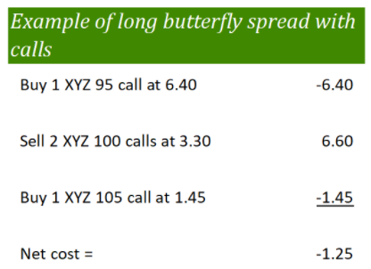
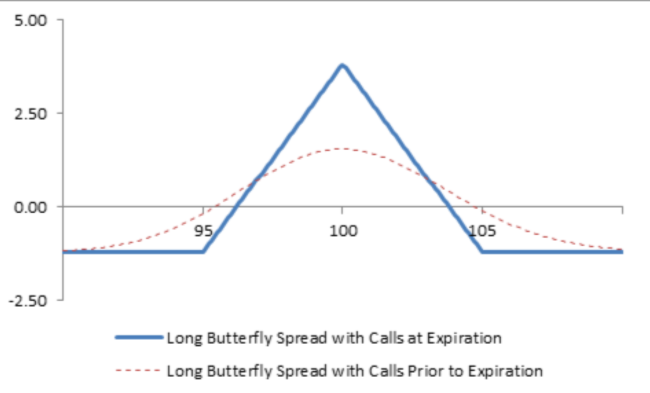
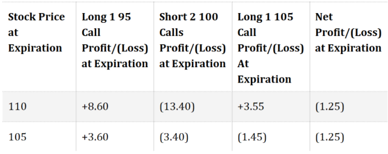
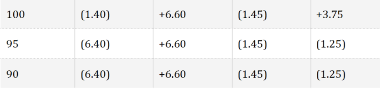
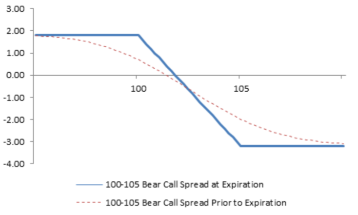
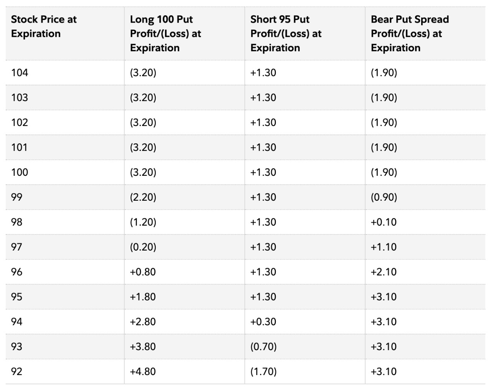
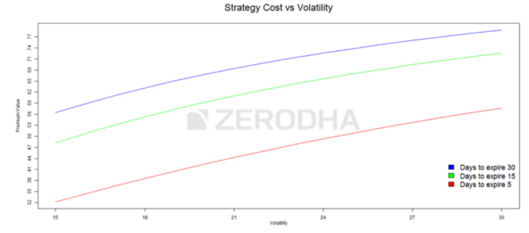
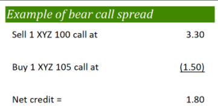
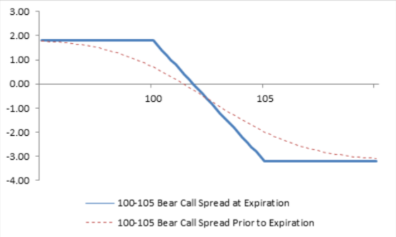
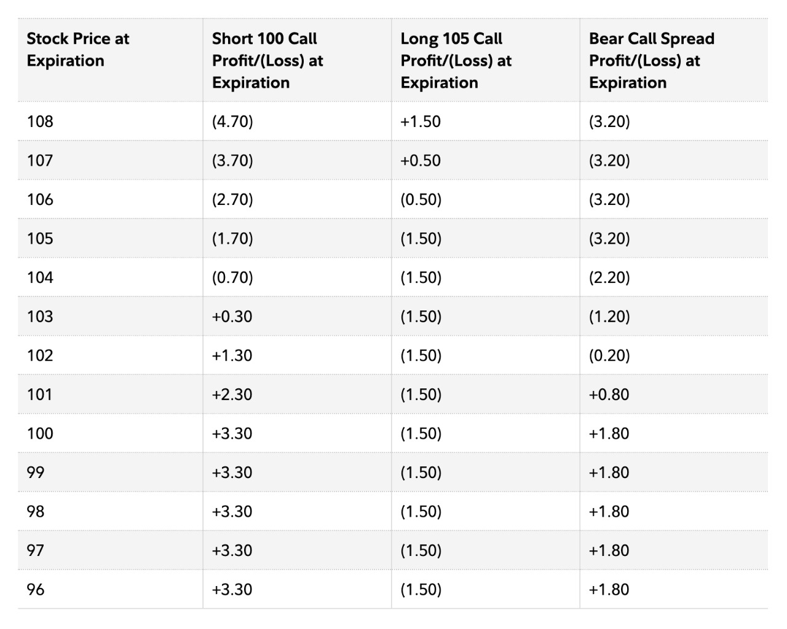

Call Butterfly
The call butterfly is not exactly bullish in the sense that it doesn’t make money when there are huge jumps in the market.It is a neutral or a moderately bullish strategy, depending on the relationship of the selected strikes.

Strategy:
This is a net debit strategy as the selling of two OTM options is not sufficient to finance an ATM and a higher OTM. However, in this strategy both the risk and the maximum profit are capped.



The calculations of the strategy are as follows:
𝑁𝑒𝑡 𝐷𝑒𝑏𝑖𝑡 = 2∗𝑃𝑟𝑒𝑚𝑖𝑢𝑚 𝑜𝑓 𝑂𝑇𝑀 𝑜𝑝𝑡𝑖𝑜𝑛𝑠 − (𝑃𝑟𝑒𝑚𝑖𝑢𝑚 𝑜𝑓 ℎ𝑖𝑔ℎ𝑒𝑟 𝑠𝑡𝑟𝑖𝑘𝑒 𝑂𝑇𝑀 𝑜𝑝𝑡𝑖𝑜𝑛 + 𝑃𝑟𝑒𝑚𝑖𝑢𝑚 𝑜𝑓 𝐼𝑇𝑀 𝑜𝑝𝑡𝑖𝑜𝑛)
𝑀𝑎𝑥𝑖𝑚𝑢𝑚 𝐿𝑜𝑠𝑠 = 𝑁𝑒𝑡 𝐷𝑒𝑏𝑖𝑡
𝑀𝑎𝑥𝑖𝑚𝑢𝑚 𝑃𝑟𝑜𝑓𝑖𝑡 = 2∗𝑃𝑟𝑒𝑚𝑖𝑢𝑚 𝑜𝑓 𝑂𝑇𝑀 𝑜𝑝𝑡𝑖𝑜𝑛𝑠 + (𝑆𝑡𝑟𝑖𝑘𝑒 𝑜𝑓 𝑂𝑇𝑀 𝑜𝑝𝑡𝑖𝑜𝑛 − 𝑆𝑡𝑟𝑖𝑘𝑒 𝑜𝑓 𝐼𝑇𝑀 𝑜𝑝𝑡𝑖𝑜𝑛 – 𝑃𝑟𝑒𝑚𝑖𝑢𝑚 𝑜𝑓 𝐼𝑇𝑀 𝑜𝑝𝑡𝑖𝑜𝑛) − 𝑃𝑟𝑒𝑚𝑖𝑢𝑚 𝑜𝑓 ℎ𝑖𝑔ℎ𝑒𝑟 𝑠𝑡𝑟𝑖𝑘𝑒 𝑂𝑇𝑀
𝐿𝑜𝑤𝑒𝑟 𝐵𝑟𝑒𝑎𝑘𝑒𝑣𝑒𝑛 = 𝐼𝑇𝑀 𝑠𝑡𝑟𝑖𝑘𝑒 𝑝𝑟𝑖𝑐𝑒 + 𝑁𝑒𝑡 𝐷𝑒𝑏𝑖𝑡
𝑈𝑝𝑝𝑒𝑟 𝐵𝑟𝑒𝑎𝑘𝑒𝑣𝑒𝑛 = 𝑆𝑡𝑟𝑖𝑘𝑒 𝑜𝑓 ℎ𝑖𝑔ℎ𝑒𝑟 𝑂𝑇𝑀 𝑜𝑝𝑡𝑖𝑜𝑛 – 𝑁𝑒𝑡 𝐷𝑒𝑏𝑖𝑡
Both the maximum loss and profit are capped for this strategy. If the stock price is at or near the center strike price when the position is established, then the forecast must be for unchanged, or neutral, price action. If the stock price is below the center strike price when the position is established, then the forecast must be for the stock price to rise to the center strike price at expiration (modestly bullish).
A long butterfly spread with calls can also be described as the combination of a bull call spread and a bear call spread. The bull call spread is the long lowest-strike call combined with one of the short center-strike calls, and the bear call spread is the other short center-strike call combined with the long highest-strike call.
Option Greeks:
Delta:
Regardless of time to expiration and regardless of stock price, the net delta of a long butterfly spread remains close to zero until one or two days before expiration. If the stock price is below the lowest strike price in a long butterfly spread with calls, then the net delta is slightly positive. If the stock price is above the highest strike, then the net delta is slightly negative. Overall, a long butterfly spread with calls does not profit from price stock price change; it profits from time decay as long as the stock price is between the highest and lowest strikes.
Vega:
Long butterfly spreads with calls have a negative Vega. This means that the price of a long butterfly spread falls when volatility rises (and the spread loses money). When volatility falls, the price of a long butterfly spread rises (and the spread makes money). Long butterfly spreads, therefore, should be purchased when volatility is “high” and forecast to decline.
Theta:
A long butterfly spread with calls has a net positive theta as long as the stock price is in a range between the lowest and highest strike prices. If the stock price moves out of this range, however, the theta becomes negative as expiration approaches.
Synthetic Call
This strategy employs synthetic call ,arbitrage and Put Call Parity which are defined below, followed by the actual strategy.
Synthetic Long:
A Synthetic Long is used to build a position whose payoff is similar to that of going long on futures. This can be executed as follows:
(Make sure that the options belong to the same underlying and belongs to the same expiry)
When we plot the net payoff, we realize that the payoff structure is similar to long call futures.
Arbitrage:
Arbitrage is an opportunity to buy goods/asset in a cheaper market and sell the same in expensive markets and pocket the difference in prices. Such opportunities also occur in the stock market and the Put Call Parity allows us to identify them.
Put Call Parity:
Put-call parity states that simultaneously holding a short European put and long European call of the same class will deliver the same return as holding one forward contract on the same underlying asset, with the same expiration, and a forward price equal to the option's strike price.
This can be represented as:
𝑃−𝐶+𝑆=𝑒𝑥𝑝(−𝑟(𝑇−𝑡))𝐾
Proof of put and call parity: Arbitrage reasoning
Let us explain the formula for put & call parity using the arbitrage arguments. Whatever the put and call options prices (with the same expiry dates and the same strike prices) are, if we are buying a put now (at time t), suppose we decide also to sell a call and buy a share of stock. It costs 𝑃t−𝐶t+𝑆t which turns out to be positive, - remember that 𝑆 is much greater than 𝐶 and 𝑃. To finance this operation, we borrow the amount 𝑃t−𝐶t+𝑆t in the bank. Since both options are European, we wait till July (expiry date) keeping the share of stock as well: this is our portfolio = the set of all financial securities which we have at the moment. Let us look at the P&L plot for this portfolio at expiry. Our P&L is positive and constant, it is equal to 𝐾:
𝑃T−𝐶T+𝑆T = 𝐾
We can check it using the definitions of payoff functions:
𝑃T−𝐶T+𝑆T = (𝐾 - 𝑆T)+ - (𝑆T - 𝐾)+ + 𝑆T = 𝐾
Indeed, if 𝑆𝑇>𝐾 then the value(𝐾−𝑆𝑇)+−(𝑆𝑇−𝐾)++𝑆𝑇 equals to
0−(𝑆𝑇−𝐾)+𝑆𝑇=𝐾
If 𝑆𝑇≤𝐾 then it equals to
(𝐾−𝑆𝑇)−0+𝑆𝑇=𝐾
So, our profit is deterministic, not random. Hence, it must be exactly the same as if it were invested into a bank account with the interest rate r, that is,
𝐾=𝑒𝑥𝑝(𝑟(𝑇–𝑡))(𝑃𝑡 – 𝐶𝑡+𝑆𝑡)
Otherwise, an arbitrage opportunity would arise. So, we come to the put and call parity formula
𝑃−𝐶+𝑆=𝑒𝑥𝑝(−𝑟(𝑇−𝑡))𝐾
Bear Put Spread
The Bear Put Spread is a two-leg spread strategy
traditionally involving ITM and OTM Put options invoked
when the view on the market is ‘moderately bearish’.
Example of bear put spread
Strategy
Note that both the options belong to the same underlying, have same expiration date and are in the same ratio (1:1).
This is a net debit strategy as initially we need to put money into the strategy (ATM option is costlier than OTM option). Both the maximum loss and gain are capped as can be seen from the below calculations.


The calculations are as follows:
𝑆𝑝𝑟𝑒𝑎𝑑 = 𝑆𝑡𝑟𝑖𝑘𝑒 𝑃𝑟𝑖𝑐𝑒 𝑜𝑓 𝐿𝑜𝑛𝑔 𝑃𝑢𝑡 – 𝑆𝑡𝑟𝑖𝑘𝑒 𝑃𝑟𝑖𝑐𝑒 𝑜𝑓 𝑆ℎ𝑜𝑟𝑡 𝑃𝑢𝑡
𝑁𝑒𝑡 𝐷𝑒𝑏𝑖𝑡 = 𝑀𝑎𝑥𝑖𝑚𝑢𝑚 𝐿𝑜𝑠𝑠 = = 𝑃𝑟𝑒𝑚𝑖𝑢𝑚 𝑜𝑓 𝐿𝑜𝑛𝑔 𝑃𝑢𝑡− 𝑃𝑟𝑒𝑚𝑖𝑢𝑚 𝑜𝑓 𝑆ℎ𝑜𝑟𝑡 𝑃𝑢𝑡
𝑀𝑎𝑥𝑖𝑚𝑢𝑚 𝑃𝑟𝑜𝑓𝑖𝑡 = 𝑆𝑝𝑟𝑒𝑎𝑑 – 𝑁𝑒𝑡 𝐷𝑒𝑏𝑖𝑡
𝐵𝑟𝑒𝑎𝑘−𝑒𝑣𝑒𝑛 𝑝𝑜𝑖𝑛𝑡 = 𝑆𝑡𝑟𝑖𝑘𝑒 𝑃𝑟𝑖𝑐𝑒 𝑜𝑓 𝐿𝑜𝑛𝑔 𝐶𝑎𝑙𝑙 + 𝑁𝑒𝑡 𝐷𝑒𝑏𝑖𝑡 (𝑃𝑜𝑖𝑛𝑡 𝑜𝑓 𝑧𝑒𝑟𝑜 𝑝𝑎𝑦𝑜𝑓𝑓)
Option Greeks:
Delta:
A bear call spread benefits when the underlying price falls and is hurt when it rises. This means that the position has a “net negative delta.” Also, because a bear call spread consists of one short call and one long call, the net delta changes very little as the stock price changes and time to expiration is unchanged. In the language of options, this is a “near-zero gamma.”
Vega:
Since a bear put spread consists of one short put and one long put, the price of a bear call spread changes very little when volatility changes and other factors remain constant. In the language of options, this is a “near-zero Vega.”
Thus, when there is ample time to expiry, the bear call spread cost doesn’t vary much with volatility. If around 15 days is left the effect of volatility is a bit more noticeable. However, the increase in Vega when there are only a few days left till expiry benefits the Bull Put Spread as it increases the chances the stock expires OTM.

(Voltality)
Theta:
The time value portion of an option’s total price decreases as expiration approaches. This is known as time erosion, or time decay. Since a bear put spread consists of one long put and one short put, the sensitivity to time erosion depends on the relationship of the stock price to the strike prices of the spread. If the stock price is “close to” or above the strike price of the long put (higher strike price), then the price of the bear put spread decreases with passing of time (and loses money). This happens because the long put is closest to the money and decreases in value faster than the short put. However, if the stock price is “close to” or below the strike price of the short put (lower strike price), then the price of the bear put spread increases with passing time (and makes money). This happens because the short put is now closer to the money and decreases in value faster than the long put. If the stock price is half-way between the strike prices, then time erosion has little effect on the price of a bear put spread, because both the long put and the short put decay at approximately the same rate.
Strike selection is very similar to that of bull call spread
Benefits compared to naked call option:
Drawbacks:
Bear Call Spread
The Bear Call Spread is a two-leg spread strategy traditionally involving ITM and OTM Call options invoked when the view on the market is ‘moderately bearish’.

Strategy
Note that both the options belong to the same underlying, have same expiration date and are in the same ratio (1:1).
This is a net credit strategy as initially, the cost of buying OTM Put option is less than the premium received by selling an ITM option. Like bear putspread, both the profit and loss are capped.
The calculations are as follows:
𝑆𝑝𝑟𝑒𝑎𝑑 = 𝑆𝑡𝑟𝑖𝑘𝑒 𝑃𝑟𝑖𝑐𝑒 𝑜𝑓 𝐿𝑜𝑛𝑔 𝐶𝑎𝑙𝑙 – 𝑆𝑡𝑟𝑖𝑘𝑒 𝑃𝑟𝑖𝑐𝑒 𝑜𝑓 𝑆ℎ𝑜𝑟𝑡 𝐶𝑎𝑙𝑙
𝑁𝑒𝑡 𝐶𝑟𝑒𝑑𝑖𝑡= 𝑀𝑎𝑥𝑖𝑚𝑢𝑚 𝑃𝑟𝑜𝑓𝑖𝑡= 𝑃𝑟𝑒𝑚𝑖𝑢𝑚 𝑜𝑓 𝑆ℎ𝑜𝑟𝑡 𝐶𝑎𝑙𝑙 − 𝑃𝑟𝑒𝑚𝑖𝑢𝑚 𝑜𝑓 𝐿𝑜𝑛𝑔 𝐶𝑎𝑙𝑙
𝑀𝑎𝑥𝑖𝑚𝑢𝑚 𝐿𝑜𝑠𝑠 = 𝑆𝑝𝑟𝑒𝑎𝑑 – 𝐼𝑛𝑖𝑡𝑖𝑎𝑙 𝑃𝑟𝑜𝑓𝑖𝑡
𝐵𝑟𝑒𝑎𝑘−𝑒𝑣𝑒𝑛 𝑝𝑜𝑖𝑛𝑡 (𝑃𝑜𝑖𝑛𝑡 𝑜𝑓 𝑧𝑒𝑟𝑜 𝑝𝑎𝑦𝑜𝑓𝑓) = 𝑆𝑡𝑟𝑖𝑘𝑒 𝑃𝑟𝑖𝑐𝑒 𝑜𝑓 𝑆ℎ𝑜𝑟𝑡 𝐶𝑎𝑙𝑙 + 𝑁𝑒𝑡 𝐶𝑟𝑒𝑑𝑖𝑡


Option Greeks:
Delta:
A bear call spread benefits when the underlying price falls and is hurt when it rises. This means that the position has a “net negative delta.” Because a bear call spread consists of one short call
and one long call, the net delta changes very little as the stock price changes and time to expiration is unchanged. In the language of options, this is a “near-zero gamma.”
Vega:
Since a bear call spread consists of one short call and one long call, the price of a bear call spread changes very little when volatility changes and other factors remain constant. In the language of options, this is a “near-zero Vega.”
Thus, when there is ample time to expiry, the bear call spread cost doesn’t vary much with volatility. If around 15 days is left the effect of volatility is a bit more noticeable. However, the increase in Vega when there are only a few days left till expiry benefits the Bull Put Spread as it increases the chances the stock expires OTM.
Theta:
The time value portion of an option’s total price decreases as expiration approaches. This is known as time erosion. Since a bear call spread consists of one short call and one long call, the sensitivity to time erosion depends on the relationship of the stock price to the strike prices of the spread. If the stock price is “close to” or below the strike price of the short call (lower strike price), then the price of the bear call spread decreases (and makes money) with passing of time. This happens because the short call is closest to the money and erodes faster than the long call. However, if the stock price is “close to” or above the strike price of the long call (higher strike price), then the price of the bear call spread increases (and loses money) with passing time. This happens because the long call is now closer to the money and erodes faster than the short call. If the stock price is half-way between the strike prices, then time erosion has little effect on the price of a bear call spread, because both the short call and the long call erode at approximately the same rate.
Strike selection is very similar to that of bull call spread.
Benefits compared to naked call option:
Drawbacks: